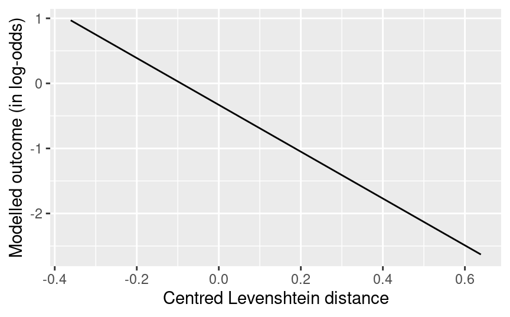
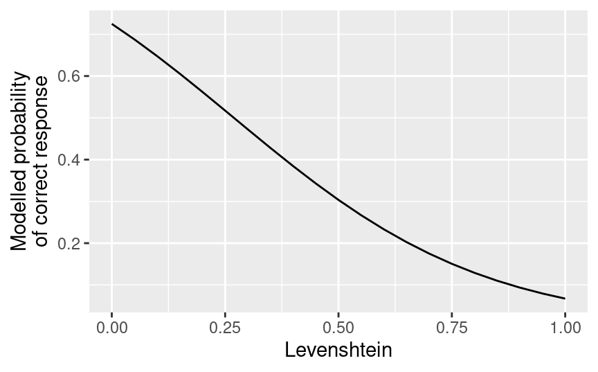
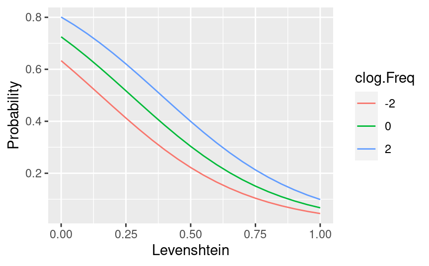

The results of regression models, particularly fairly complex ones, can be difficult to appreciate and hard to communicate to an audience. One useful technique is to plot the effect of each predictor variable on the outcome while holding constant any other predictor variables. Fox (2003) discusses how such effect displays are constructed and provides an implementation in the effects package for R.
Since I think it’s both instructive to see how effect displays are constructed from the ground up and useful to be able to tweak them yourself in R, this blog post illustrates how to draw such plots for three increasingly complex statistical models: ordinary multiple regression, logistic regression, and mixed-effects logistic regression. The goal in each of these three examples is to visualise the effects of the predictor variables without factoring in the uncertainty about these effects; visualising such uncertainty will be the topic of a future blog post.
Multiple regression
Data
For the first example, we’ll use a dataset from my PhD thesis. 163 German-speaking participants translated 45 spoken Swedish words into German and took a couple of cognitive and linguistic tests. For the sake of this example, we will model the number of correctly translated spoken words (Spoken) in terms of the participants’ performance on an intelligence test (Raven.Right) and an English-language test (English.Cloze) as well as their Sex. We’ll also fit an interaction between the intelligence test score and the participants’ sex, but this is mainly to illustrate how interactions can be visualised in effect displays.
The lines below read in the data, retain the variables of interest, filter out any rows with incomplete data, and summarise the structure of the dataset.
Since this isn’t a tutorial on modelling data, we won’t bother with whether this dataset can be analysed in a better way and we’ll just fit the data in a multiple regression model. Even though it isn’t really necessary in this example, it’s generally good practice to first centre the numeric predictors at their sample means and to convert the binary predictor Sex to a numeric predictor with the values -0.5 and 0.5 for female and male, respectively (= sum-coding). This makes the model’s intercept readily interpretable as the modelled Spoken score for someone of unknown sex with average Raven and English scores. In this example, it adds a couple of extra steps to the process, but centring and numerically recoding variables is a good habit to get into.
# Define shorthand for centring at sample mean,# i.e., subtracting sample mean from each valuec. <-function(x) x -mean(x)# Centre numeric predictors at sample meanex1$c.Raven <-c.(ex1$Raven.Right)ex1$c.English <-c.(ex1$English.Cloze)# Sum-code binary predictor (-0.5 vs. 0.5)ex1$n.Sex <-as.numeric(ex1$Sex) -1.5# Confirm that female = -0.5, and male = 0.5xtabs(~ n.Sex + Sex, ex1)
Sex
n.Sex female male
-0.5 89 0
0.5 0 71
# Fit multiple regression model with n.Sex, # c.Raven, their interaction, and c.Englishmod1 <-lm(Spoken ~ n.Sex * c.Raven + c.English,data = ex1)# Show model coefficientscoef(mod1)
For the first effect display, we want to visualise the modelled relationship between the participants’ English score and their sex on the one hand and their Spoken score on the other hand while holding constant their performance on the Raven intelligence test. To this end, we create a new dataframe (I’ll prefix these with nd) that contains each unique c.English value that occurs in the dataset (there are 25 such values) in combination with each possible value of n.Sex (i.e., -0.5 and 0.5), yielding a dataframe with 50 entries. To this dataframe, we add the c.Raven value at which we want to hold this variable constant. A natural choice is the sample mean, which is obviously 0 for the centred variable. But you could also pick the sample median (median(ex1$c.Raven)) instead, or indeed any other value that you think is sensible. The expand.grid() call accomplishes all of this:
nd1_eng <-expand.grid(# Two possible values for n.Sexn.Sex =c(-0.5, 0.5),# Fix c.Raven at its sample mean (= 0)c.Raven =0,# Unique c.English values in samplec.English =unique(ex1$c.English))# Show first 6 rowshead(nd1_eng)
We can now add to this dataframe the average Spoken values that you would expect to find according to the regression model for each combination of the n.Sex, c.Raven and c.English values listed. This is simply a matter of taking these values, multiplying them by the corresponding model efficients (shown under ‘Model’ above), and adding them up (don’t forget to include the intercept term!).
Let’s walk through this for the first row in nd1_eng.
Take the model’s estimated intercept: 16.51.
Multiply -0.5 (n.Sex value) with the model’s n.Sex coefficient: -0.5 × -1.234 = 0.617.
Multiply 0 (c.Raven value) with the model’s c.Raven coefficient, which obviously yields 0.
Multiply -3.64 (c.English value) with the model’s c.English coefficient: -3.64 × 0.329 = -1.2.
For the interaction term between n.Sex and c.Raven, multiply the two values and the interaction coefficient: -0.5 × 0 × 0.180 = 0.
15.9, then, is the predicted average Spoken value for women whose Raven intelligence score is at the sample mean and whose English-language test result is 3.64 below the sample mean. (If you ever come across the expression Mβ in a statistics text, the above computation is what is meant: take the predictor values, multiply them with the respective model coefficients, and add them up together with the intercept.) The predict() does this calculation for all rows in nd1_eng:
# Use mod1 to 'predict' the Spoken values for the data in nd1_eng,# and add these predictions to nd1_eng:nd1_eng$Prediction <-predict(mod1, newdata = nd1_eng)# Show first 6 rowshead(nd1_eng)
Now, finally, we can use these predicted values to visualise the modelled relationship between c.English and n.Sex on the one hand and Spoken on the other hand. (Check out the tutorial on drawing line charts if the following commands are new to you.)
The predictor variables c.English and n.Sex aren’t readily interpretable because they are centred and sum-coded, respectively. To make the plot above more informative, we can de-centre the c.English variable by simply adding the sample mean of English.Cloze in the original dataset (= ex1) to the c.English values in nd1_eng. Similarly, we can relabel the values in n.Sex:
The plot shows the average Spoken values predicted by the regression model for men and women with a Raven test score equal to the current sample mean depending on their performance on the English cloze test. Usually, though, the precise values matter less than the general pattern of the results.
The female advantage in the plot above is constant across the English.Cloze range, which isn’t surprising: we didn’t model an interaction between n.Sex and c.English, so we won’t find one if we plot the modelled effects. We did, however, model an interaction between n.Sex and c.Raven, so let’s see what an effect display of an interaction looks like:
Incidentally, I wouldn’t read too much into this interaction since there are considerably better ways to analyse this dataset. The aim here was to illustrate how to draw such plots, not to compare different methods of analysis.
Logistic regression
Data
In the second and third example we will apply the same procedure as in the first example to logistic regression model. The dataset is from Vanhove & Berthele (2015), and the goal in both cases is to model and visualise the relationship between a cognate pair’s orthographic Levenshtein distance (the larger the distance, the less orthographic overlap the cognates have) and their corpus frequency (log.FreqGermanic; a logarithmically transformed frequency measure) on the one hand and the probability that readers will spot the cognate relationship on the other hand.
For the present example, we will model the data from a single, randomly chosen participant, viz. DB3, so that the data can be analysed in a straightforward logistic regression model; for the next example, we’ll analyse the data for all participants simultaneously in a mixed-effects model.
# Read in the dataex2 <-read.csv("http://homeweb.unifr.ch/VanhoveJ/Pub/Data/ExampleLogisticRegression.csv",stringsAsFactors =TRUE)# Retain only the observations for participant `DB3`:ex2 <-droplevels(subset(ex2, Subject =="DB3"))str(ex2)
To draw an effects display for the Levenshtein variable, we do the exact same thing as in the first example: construct a dataframe that contains the predictors whose effects we want to plot as well as the predictors whose effects we want to keep constant. Here, we want to create a dataframe in which c.Lev varies along its range and where clog.Freq is kept constant (e.g., at its sample mean of 0). Here I use the seq() function rather than unique() to specify the c.Lev values, but either will work.
nd2_lev <-expand.grid(# A sequence of c.Lev values# from the sample minimum# through the sample maximum# in steps of 0.05c.Lev =seq(min(ex2$c.Lev),max(ex2$c.Lev),by =0.05),# Fix clog.Freq at its sample meanclog.Freq =0)head(nd2_lev)
Using predict(), we can again compute the expected values – according to the model – for each combination of predictor values in nd2_lev. Since this is a logistic model, the predictions are produced in log-odds, which we can plot:
# Fill in predicted valuesnd2_lev$Prediction <-predict(mod2, nd2_lev)# Plot Levenshtein effectggplot(nd2_lev,aes(x = c.Lev,y = Prediction)) +geom_line() +xlab("Centred Levenshtein distance") +ylab("Modelled outcome (in log-odds)")

There is one problem: No-one really thinks in log-odds, and any audience will more readily understand probabilities than log-odds, so it’s better to express these predictions as probabilities. To do so, specify the parameter type in the predict() function as "response". (Alternatively, apply the logistic function to the values in log-odds using plogis().) If we then de-centre the c.Lev variable, we can draw an interpretable effect display:
# Fill in predicted values as probabilitiesnd2_lev$Probability <-predict(mod2, nd2_lev,type ="response")# De-centre c.Levnd2_lev$Levenshtein <- nd2_lev$c.Lev +mean(ex2$MinLevGermanic)# Plotggplot(nd2_lev,aes(x = Levenshtein,y = Probability)) +geom_line() +ylab("Modelled probability\nof correct response")

Importantly, we modelled the effect linearly in log-odds, but when the effect is expressed in probabilities, this yields a nonlinear curve. This is not surprising nor does it tell us anything about what we’re investigating: if you model something linearly in log-odds, the effect will be nonlinear if expressed in probabilities.
Note, furthermore, that we kept the frequency predictor clog.Freq constant at 0 for this plot. If you fix this predictor at different values, you’ll end up with curves that don’t run perfectly parallel to each other, as the plot below illustrates. This is different from effects displays for ordinary regression models, where fixing the non-focus predictors at different values produces parallel lines, and it is due to the log-odds–to–probability transformation.

To avoid making this blog post much too long, I’ll leave the effect display of the frequency variable as an exercise to the reader.
Mixed-effects logistic regression
Data
We’ll use the same dataset as in the second example, but this time we don’t restrict the dataset to one participant.
Not that it’s really necessary, but since it’s a good habit to develop, centre the numeric variables at their sample mean, and express the binary predictor Sex as a numeric variable with the values -0.5 and 0.5.
# Centre numeric variablesex3$c.Lev <-c.(ex3$MinLevGermanic)ex3$clog.Freq <-c.(ex3$log.FreqGermanic)ex3$c.Eng <-c.(ex3$EngReading)# Express Sex as numeric variable (+/- 0.5)# where -0.5 = m(an) and 0.5 = w(oman)ex3$n.Sex <-as.numeric(ex3$Sex) -1.5xtabs(~ n.Sex + Sex, ex3)
Sex
n.Sex m w
-0.5 6120 0
0.5 0 12060
Fit a logistic mixed-effects regression model using the glmer() function from the lme4 package. All effects are modelled linearly (in log-odds) without interaction: Levenshtein distance (c.Lev), corpus frequency (clog.Freq), the participants’ English reading skills (c.Eng) and their sex (n.Sex). The model also includes by-item and by-subject random intercepts as well as by-item adjustments to the English reading skills slope and by-subject adjustments to the Levenshtein effect.
library(lme4)
Loading required package: Matrix
mod3 <-glmer(Correct ~ c.Lev + clog.Freq + c.Eng + n.Sex + (1+ c.Lev | Subject) + (1+ c.Eng | Stimulus),data = ex3,family ="binomial")# Uncomment the next line to show model# summary(mod3)
Effect display
For the mixed-effects model, I’ll assume that you want to plot the effect of a predictor variable for an otherwise average item and an otherwise average participant, i.e., a plot that is based on the fixed-effect estimates alone. An alternative would be that you’d plot the effects associated with a specific item (taking into account the random-effect adjustments for that specific item), with a specific participant (taking into account the random-effect adjustments for that particular participant), or both. For this fixed-effects-only scenario, which I suspect is usually what is of interest, the logic is the same as in the previous examples.
First construct a data frame where the focus predictor varies along its range (for instance, using unique() or seq()) and where the other predictors are fixed at sensible values. Here I fix the frequency and the English reading predictor at their sample means (0). The n.Sex variable, however, doesn’t have a sample mean of 0 but of 0.163. (There are 67 women and only 34 men in the sample.) I fixed n.Sex at 0 nonetheless because I want to plot the modelled probabilities for an unknown participant of unspecified sex. If instead I wanted to plot the modelled probabilities for an unknown participant who is a 2-to-1 favourite to be a woman, I would use 0.163 instead; if I wanted to plot the modelled probabilities for an unknown male participant, I’d use -0.5.
Then add the predicted probabilities to this dataframe (type = "response"). The re.form = NA bit specifies that we don’t want to take into account any random effects.
As for the interpretation of this plot, these are the probabilities of a correct response that the model predicts
for a participant of unknown sex (n.Sex was set to 0, i.e., the participant is equally likely to be a man or a woman);
whose English reading skills equal the current sample average (c.Eng was set to 0)
and whose cognate guessing skills are otherwise average compared to the current sample (we didn’t take into account any positive or negative by-participant adjustments to the overall intercept and c.Lev effects)
when responding to stimuli with varying Levenshtein values
whose logarithmically transformed corpus frequencies equal the current sample mean (clog.Freq was set to 0)
and which are otherwise of average difficult compared to the current sample (we didn’t take into account any positive or negative adjustments to by-stimulus adjustments to the overall intercept and the c.Eng effects).
A quicker way of putting this is that these are the probabilities with which a participant with average English reading skills of whom nothing else is known would respond correctly to stimuli with varying Levenshtein values and average corpus frequencies of which nothing else is known either. Again, though, the idea is usually not so much to interpret these probabilities themselves but rather to get or give a broad sense of how variation in one predictor is associated with variation in the outcome.
Caveats about effect displays
I find effect displays useful to convey regression results, but you can’t expect too much from them.
First of all, in terms of effect displays, you can only get out of a model what you put into it. For instance, if you don’t model an interaction between two variables, you won’t find one in the effect display. Similarly, if you model the effect of a predictor linearly, you won’t find a nonlinear effect in the plot – unless, of course, you apply some nonlinear transformation in the process, such as expressing the effects modelle in a logistic regression as probabilities. In the latter case, you’re guaranteed to find a nonlinear effect.
I labour the latter point because I have seen one or two cases where a nonlinear effect emerging from a logistic regression was interpreted in subject-matter terms as something quite surprising. It isn’t: it’s a direct consequence of how the model works.
The second caveat is that “showing the effect of one variable while keeping constant the other variables” is often little more than a convenient fiction. While you can use a statistical model to estimate how a person’s wage changes when varying people’s French reading skills and holding constant their French oral skills, years of education, and intelligence, there needn’t be anything in the real world that corresponds to this ‘effect’ nor would any results be actionable. (How would you go about improving someone’s French reading skills while keeping their years of education and their French oral skills constant, anyway?) This caveat is especially relevant in correlational studies where sets of predictors are highly correlated with each other, rendering difficult or even impossible the interpretation the effect of any single ‘independent’ variable.